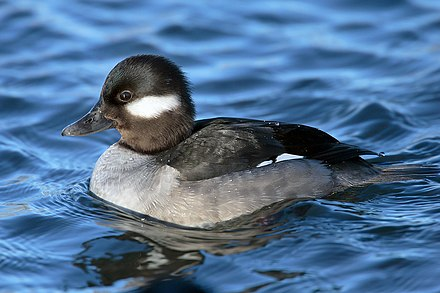

Duck is the common name for numerous species of waterfowl in the family Anatidae. Ducks are generally smaller and shorter-necked than swans and geese, which are members of the same family. Divided among several subfamilies, they are a form taxon; they do not represent a monophyletic group (the group of all descendants of a single common ancestral species), since swans and geese are not considered ducks. Ducks are mostly aquatic birds, and may be found in both fresh water and sea water. Ducks are sometimes confused with several types of unrelated water birds with similar forms, such as loons or divers, grebes, gallinules and coots.
Here some free pictures of cutest ducks in the world
Cutest ducks Next Page